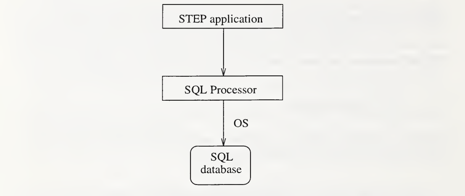

NIST IR 5283 日本語訳
英語タイトル : Security of SQL-Based Implementations of Product Data Exchange Using STEP日本語タイトル : STEP の SQL ベース実装におけるセキュリティ上の考慮事項
公開日 : 1993-10-01
原文URL : https://csrc.nist.gov/pubs/ir/5283/final
原本 PDF : https://doi.org/10.6028/NIST.IR.5283
訳文 : 有志による非公式の日本語訳（AI による翻訳とレビュー）。全 192 段落を翻訳済み（原文取得日 : 2026-10-31）
[要約] NIST IR 5283 は、STEP を実装するために使われる SQL 標準の各版のセキュリティ上の含意を検討した論文です。SQL は多くの異なる運用環境で使われる可能性があり、STEP は特定のセキュリティポリシーを前提としていないため、さまざまなセキュリティポリシーを検討しています。論文は、STEP を実装する際のセキュリティ上の問題としてアクセス制御、推論と集約、オブジェクトの再利用を、また保証とアカウンタビリティを取り上げています。セキュリティポリシーとしては、ロールベース、機密性のための強制アクセス制御、完全性のための強制アクセス制御を論じ、NIST の一般的な SQL セキュリティ文書の付属文書として位置づけられています。
NISTIR 5283
NISTIR 5283
Security Considerations for SQL-based Implementations of STEP
STEP の SQL ベース実装におけるセキュリティ上の考慮事項
Lawrence E. Bassham
W. Timothy Polk
Lawrence E. Bassham
W. Timothy Polk
U.S. DEPARTMENT OF COMMERCE
Technology Administration
National Institute of Standards and Technology
Gaithersburg, MD 20899
米国商務省
技術局
米国国立標準技術研究所
Gaithersburg, MD 20899
NISTIR 5283
NISTIR 5283
Security Considerations for SQL-based Implementations of STEP
STEP の SQL ベース実装におけるセキュリティ上の考慮事項
Lawrence E. Bassham
W. Timothy Polk
Lawrence E. Bassham
W. Timothy Polk
U.S. DEPARTMENT OF COMMERCE
Technology Administration
National Institute of Standards and Technology
Gaithersburg, MD 20899
米国商務省
技術局
米国国立標準技術研究所
Gaithersburg, MD 20899
October 1993
1993 年 10 月
U.S. DEPARTMENT OF COMMERCE
Ronald H. Brown, Secretary
TECHNOLOGY ADMINISTRATION
Mary L. Good, Under Secretary for Technology
米国商務省
Ronald H. Brown 長官
技術局
Mary L. Good 技術担当次官
NATIONAL INSTITUTE OF STANDARDS AND TECHNOLOGY
Arati Prabhakar, Director
米国国立標準技術研究所
Arati Prabhakar 所長
Contents
目次
1 Introduction
1 はじめに
The Database Language SQL (SQL) is a widely used language for accessing and manipulating relational databases. As such, SQL can be of use in many different operational environments, with correspondingly different needs for security. One specific application of this standard is in Product Data Exchange using STEP1 (PDES).[PDE93a]
データベース言語 SQL（SQL）は、リレーショナルデータベースにアクセスし操作するために広く使われている言語です。そのため、SQL は多くの異なる運用環境で使われる可能性があり、それに応じてセキュリティのニーズも異なります。この標準の特定の応用の 1 つが、STEP1 を使った製品データ交換（PDES）です。[PDE93a]
This paper examines the security implications of the versions of the SQL standard as used to implement STEP. STEP does not imply any particular security policy, so a variety of security policies are examined. The paper has been written as a companion document to NIST’s general SQL security document, Security Issues in the Database Language SQL [PB93], and references that document frequently.
この論文は、STEP を実装するために使われる SQL 標準の各版のセキュリティ上の含意を検討します。STEP は特定のセキュリティポリシーを前提としていないため、さまざまなセキュリティポリシーを検討します。この論文は、NIST の一般的な SQL セキュリティ文書 Security Issues in the Database Language SQL [PB93] の付属文書として書かれており、その文書を頻繁に参照します。
1.1 Audience
1.1 対象読者
This paper is intended for designers of systems and databases that use SQL in implementing STEP. With [PB93], this paper will help to evaluate the security controls of SQL with respect to different security policies. This evaluation should help determine the types of controls and mechanisms that will be required from the SQL processor(s), as well as other components of the system (such as operating system (OS) controls, network protocols, and identification and authentication mechanisms).
この論文は、STEP の実装に SQL を使うシステムとデータベースの設計者を対象としています。この論文は、[PB93] とあわせて、さまざまなセキュリティポリシーに照らして SQL のセキュリティ統制を評価するのに役立ちます。この評価は、SQL プロセッサーに求められる統制とメカニズムの種類や、システムのほかの構成要素（オペレーティングシステム（OS）の統制、ネットワークプロトコル、識別と認証のメカニズムなど）に求められる統制とメカニズムを判断するのに役立つはずです。
1.2 The Standards
1.2 標準
SQL has been adopted by both national and international standards organizations. It is the nature of standards to specify some features as required and other features as prohibited. Additional features may also be included in implementations, provided they do not conflict with elements specified in the standard. This allows for product differentiation. Certain security-relevant features are required in an SQL-compliant database management system (DBMS). Other security features are not specified by SQL, but may appear in particular products. The exact functionality of an SQL-compliant DBMS varies according to which version of the SQL standard is selected and what unspecified features are included. In addition, many products are not fully compliant, so further variation is possible.
SQL は、国内および国際の標準化団体の両方に採用されています。一部の機能を必須とし、ほかの機能を禁止として規定するのは、標準の性質です。標準に規定された要素と矛盾しない限り、実装に追加の機能を含めることもできます。これにより、製品の差別化が可能になります。セキュリティに関連する一定の機能は、SQL に準拠したデータベース管理システム（DBMS）で必須とされています。そのほかのセキュリティ機能は、SQL では規定されていませんが、特定の製品に現れることがあります。SQL に準拠した DBMS の正確な機能は、SQL 標準のどの版が選択されるか、また規定されていないどの機能が含まれるかによって異なります。加えて、多くの製品は完全には準拠していないため、さらなる差異が生じる可能性があります。
The basic SQL definition is ANSI X3.135-1989, Database Language - SQL with Integrity Enhancement [ANS89a], and will be referred to as SQL’89. The functionality of SQL’89 includes schema definition, data manipulation, and transaction management. SQL’89 and ANSI X3.168-1989, Database Language - Embedded SQL [ANS89b], form the basis for the Federal Information Processing Standard (FIPS) 127-1 [FIP90].
SQL の基本的な定義は ANSI X3.135-1989, Database Language - SQL with Integrity Enhancement [ANS89a] で、SQL’89 と呼びます。SQL’89 の機能には、スキーマ定義、データ操作、トランザクション管理が含まれます。SQL’89 と ANSI X3.168-1989, Database Language - Embedded SQL [ANS89b] は、Federal Information Processing Standard（FIPS）127-1 [FIP90] の基礎となっています。
ANSI X3.135-1992 [ANS92] describes an enhanced SQL, known as SQL’92. The enhancements include schema manipulation, dynamic creation and execution of SQL statements, and network environment features for connection and session management [CO92][DD92]. The FIPS 127-2 [FIP93] is based upon X3.135-1992.
ANSI X3.135-1992 [ANS92] は、SQL’92 として知られる拡張された SQL を記述しています。拡張には、スキーマ操作、SQL 文の動的な作成と実行、接続とセッションの管理のためのネットワーク環境の機能が含まれます [CO92][DD92]。FIPS 127-2 [FIP93] は X3.135-1992 に基づいています。
Finally, a third version of SQL, referred to in this paper as SQL3, is currently under development in ANSI and is expected to be approved in 1994 or 1995. SQL3 enhancements will include the ability to define, create and manipulate user-defined data types in addition to tables.
最後に、この論文で SQL3 と呼ぶ SQL の第 3 の版が、ANSI で現在策定中で、1994 年または 1995 年に承認される見込みです。SQL3 の拡張には、テーブルに加えて、利用者定義のデータ型を定義し、作成し、操作する機能が含まれます。
ISO/IEC Draft International Standards 9579-1 [ISO90a] and 9579-2 [ISO90b] define the Remote Database Access (RDA) protocol. RDA provides a method for interconnecting database management systems. ISO/IEC 9579-1 describes the generic model; ISO/IEC 9579-2 presents the SQL specialization information.
ISO/IEC Draft International Standards 9579-1 [ISO90a] と 9579-2 [ISO90b] は、Remote Database Access（RDA）プロトコルを定義しています。RDA は、データベース管理システムを相互に接続する方法を提供します。ISO/IEC 9579-1 は汎用のモデルを記述し、ISO/IEC 9579-2 は SQL に特化した情報を示しています。
STEP is defined by the multi-part international standard ISO 10303. ISO 10303 is in development within ISO/TC 184/SC4. STEP includes generic parts for data specification[PDE92] (EXPRESS Language), file structure[PDE93b], and conformance testing[PDE93c]. STEP also includes Integrated Resources (IRs), which describe data exchange specific applications. Application Protocols (APs) define data exchange for specific applications and are defined in terms of the IRs and generic parts. The initial release of STEP contained twelve parts; a number of additional parts are under development. The twelve parts include an Overview, the three generic parts, six IRs and two APs.
STEP は、複数部からなる国際標準 ISO 10303 で定義されています。ISO 10303 は、ISO/TC 184/SC4 で策定中です。STEP には、データ仕様 [PDE92]（EXPRESS 言語）、ファイル構造 [PDE93b]、適合性試験 [PDE93c] のための汎用部分が含まれます。STEP には、データ交換に特化したアプリケーションを記述する Integrated Resources（IR）も含まれます。Application Protocols（AP）は、特定のアプリケーションのデータ交換を定義するもので、IR と汎用部分の観点で定義されます。STEP の最初のリリースには 12 の部が含まれており、追加の部がいくつか策定中です。この 12 の部には、概要、3 つの汎用部分、6 つの IR、2 つの AP が含まれます。
Note that PDES is not a standard. PDES stands for Product Data Exchange Using STEP. PDES “refers to the United States contributing effort to this standardization process” [FCF93].
PDES は標準ではないことに注意してください。PDES は Product Data Exchange Using STEP の略です。PDES は「この標準化プロセスに対する米国の貢献の取り組みを指します」[FCF93]。
1.3 Using This Document
1.3 この文書の使い方
This paper will be most useful to people who are familiar with SQL or relational database management systems. The reader is also assumed to have a basic knowledge of computer security or to have previously read [PB93]. Finally, the document also assumes some familiarity with STEP, although it is not required.
この論文は、SQL やリレーショナルデータベース管理システムになじみのある人にとって、最も役に立ちます。読者は、コンピューターセキュリティの基礎知識を持っているか、以前に [PB93] を読んだことがあると想定しています。最後に、必須ではありませんが、この文書は STEP についてもある程度なじみがあることを想定しています。
SQL is a general purpose tool that could be used to implement STEP in various ways. Section 2, SQL/STEP Architecture, presents a basic architecture for an SQL-based implementation of STEP. This section examines security considerations that are of increased importance for this architecture.
SQL は汎用のツールであり、さまざまな方法で STEP を実装するために使える可能性があります。第 2 節「SQL/STEP アーキテクチャ」は、STEP の SQL ベース実装の基本的なアーキテクチャを示します。この節では、このアーキテクチャで重要性が高まるセキュリティ上の考慮事項を検討します。
Section 3 identifies controls and mechanisms that can be used to address the concerns described in Section 2. These controls are organized according to an augmented Trusted Computer System Evaluation Criteria (TCSEC) model presented in [PB93]. This model reflects the Trusted Database Interpretation (TDI) [TDI91] and National Computer Security Center (NCSC) Technical Report 79-91, Integrity In Automated Information Systems [TR791]. The Interpreted Requirements presented in the TDI provide the basis for discussions of labels and audit in database. Additions to the model from TR 79-91 include the definitions of data integrity and systems integrity.
第 3 節は、第 2 節で述べた懸念に対処するために使える統制とメカニズムを特定します。これらの統制は、[PB93] で示された、拡張された Trusted Computer System Evaluation Criteria（TCSEC）モデルに従って整理されています。このモデルは、Trusted Database Interpretation（TDI）[TDI91] と、National Computer Security Center（NCSC）技術報告書 79-91, Integrity In Automated Information Systems [TR791] を反映しています。TDI に示された解釈された要件は、データベースにおけるラベルと監査の議論の基礎となります。TR 79-91 からモデルに追加されたものには、データの完全性とシステムの完全性の定義が含まれます。
STEP itself does not imply any particular implementation form or security policy. Certain policies are more easily implemented with the SQL/STEP architecture than others. In Section 4, three broad classes of security policies are briefly described, accompanied by a comparison of particular requirements with the facilities of SQL. The policy classes are: a role based policy, a mandatory access control policy for confidentiality, and a mandatory access control policy for integrity.
STEP 自体は、特定の実装形態やセキュリティポリシーを前提としていません。SQL/STEP アーキテクチャでは、特定のポリシーのほうが、ほかのポリシーより容易に実装できます。第 4 節では、3 つの大きなセキュリティポリシーの区分を簡潔に説明し、特定の要件と SQL の機能との比較を添えています。ポリシーの区分は、ロールベースのポリシー、機密性のための強制アクセス制御ポリシー、完全性のための強制アクセス制御ポリシーです。
1.4 Security Considerations
1.4 セキュリティ上の考慮事項
The basic security requirements are the preservation of confidentiality and integrity while maintaining availability. There are a number of specific threats within these categories that merit special consideration with respect to database security.
基本的なセキュリティ要件は、可用性を維持しつつ、機密性と完全性を保持することです。これらの区分の中には、データベースのセキュリティに関して特別な考慮に値する具体的な脅威が数多くあります。
Inference and aggregation are usually considered threats to mandatory access control policies, but they are threats in any environment. There are also a number of DBMS specific security issues, such as referential integrity and polyinstantiation. Classic OS problems such as deadlock and transaction completion must also be considered.
推論と集約は、通常、強制アクセス制御ポリシーに対する脅威と考えられますが、あらゆる環境で脅威となります。参照整合性や多重インスタンス化（polyinstantiation）など、DBMS に特有のセキュリティ上の課題も数多くあります。デッドロックやトランザクションの完了といった、古典的な OS の問題も考慮しなければなりません。
The following definitions will be used in this document:
この文書では、次の定義を使います。
•inference: derivation of new information from known information. The inference problem is that of users deducing unauthorized information from the legitimate information they acquire. [Thu92]
•推論（inference）: 既知の情報から新しい情報を導き出すこと。推論の問題とは、利用者が、入手した正当な情報から、許可されていない情報を推論してしまうことです。[Thu92]
•aggregation: The result of assembling or combining distinct units of data when handling sensitive information. Aggregation of data at one sensitivity level may result in the total data being designated at a higher sensitivity level. [Rob91]
•集約（aggregation）: 機微な情報を扱う際に、個別のデータの単位を集めたり組み合わせたりした結果。ある機微性レベルのデータを集約すると、データ全体がより高い機微性レベルに指定されることがあります。[Rob91]
•polyinstantiation - A database design technique utilizing simultaneous existence of multiple data objects with the same name, differentiated by their access class, to hide the existence of high data2 from low users3 .[Cam90] Polyinstantiation allows a relation to contain multiple rows with the same primary key; the multiple instances are distinguished by their security levels.[SFD92]
•referential integrity - foreign keys must reference existing primary keys.[Cam90] It is important to maintain the integrity between the referencing values (foreign key values) and the referenced key values (primary key values).[DJ92]
•参照整合性（referential integrity） - 外部キーは、既存の主キーを参照しなければなりません。[Cam90] 参照する値（外部キーの値）と参照される鍵の値（主キーの値）の間の整合性を維持することは重要です。[DJ92]
•entity integrity - A tuple in a relation cannot have a null value for any of the primary key attributes.[DJ92]
•実体整合性（entity integrity） - リレーション内のタプルは、主キーの属性のいずれについても、ヌル値を持つことはできません。[DJ92]
2 SQL/STEP Architecture
2 SQL/STEP アーキテクチャ
SQL is not a part of STEP, but is a tool that can be used in the implementation of STEP. This section begins with a brief description of SQL’s functionality. Secondly, two models of an SQL/STEP implementation are presented. Finally, the security problems associated with each component of the models are highlighted.
SQL は STEP の一部ではなく、STEP の実装で使える道具です。この節は、SQL の機能の簡潔な説明から始めます。次に、SQL/STEP 実装の 2 つのモデルを示します。最後に、モデルの各構成要素に関連するセキュリティ上の問題を強調します。
2.1 SQL Functionality
2.1 SQL の機能
SQL defines standard facilities for relational database management systems. It describes facilities to perform four specific functions:
SQL は、リレーショナルデータベース管理システムの標準的な機能を定義しています。次の 4 つの特定の機能を実行するための機能を記述しています。
•define the structure of the database and the type of database elements by creating schema definitions;
•スキーマ定義を作成することで、データベースの構造とデータベース要素の型を定義します。
•retrieve data from a database with a standard query interface;
•標準的な問い合わせインターフェースで、データベースからデータを取り出します。
•modify the contents of a database by adding, modifying or deleting tables or components; and
•テーブルや構成要素を追加、変更、削除することで、データベースの内容を変更します。
•the ability to define and manage SQL transactions.
•SQL のトランザクションを定義し管理する能力。
Each of these components has associated security threats. Schema definition is related to the problems of inference and aggregation. Data retrieval tasks must conform to confidentiality policies. Data modification must conform to integrity policy.
これらの各構成要素には、関連するセキュリティ上の脅威があります。スキーマ定義は、推論と集約の問題に関連します。データの取り出しの作業は、機密性ポリシーに適合しなければなりません。データの変更は、完全性ポリシーに適合しなければなりません。
2.2 SQL/STEP Implementation
2.2 SQL/STEP の実装
SQL is a general purpose tool that could be applied to STEP in many ways. To perform the security analysis, it is necessary to assume some architecture for an SQL/STEP implementation. Figure 1 depicts one model, which can be designed with any SQL standard. Figure 2 depicts a second model, which requires SQL’92 or SQL3 along with RDA.
SQL は汎用のツールであり、多くの方法で STEP に適用できる可能性があります。セキュリティ分析を行うには、SQL/STEP 実装のアーキテクチャをある程度仮定する必要があります。図 1 は、どの SQL 標準でも設計できる 1 つのモデルを示します。図 2 は、SQL’92 または SQL3 と RDA を必要とする第 2 のモデルを示します。
The first model shows an application interfacing with an SQL processor, which interfaces with a physical database on a local system. This model can be implemented with any version of SQL.
第 1 のモデルは、アプリケーションが SQL プロセッサーとやり取りし、SQL プロセッサーがローカルシステム上の物理データベースとやり取りするものです。このモデルは、どの版の SQL でも実装できます。

Figure 1: STEP/SQL Model 1
図 1: STEP/SQL モデル 1

Figure 2: STEP/SQL Model 2
図 2: STEP/SQL モデル 2
The second model expands the first to include remote databases, as well as the integration of non-SQL databases. SQL’92 and SQL3 have the required functionality for this model.4 This is a simplification of the model presented in [GS92].
第 2 のモデルは、第 1 のモデルを拡張して、リモートデータベースや、SQL 以外のデータベースの統合も含めたものです。SQL’92 と SQL3 には、このモデルに必要な機能があります。4 これは、[GS92] に示されたモデルを単純化したものです。
2.3 Security Responsibilities: The SQL Component
2.3 セキュリティ上の責任: SQL コンポーネント
There are valid security considerations for each of the four areas of SQL functionality.
SQL の 4 つの機能領域のそれぞれについて、妥当なセキュリティ上の考慮事項があります。
•Database Schema: The database schema must be well designed to ensure that aggregation and inference are not threats.
•データベーススキーマ: 集約と推論が脅威にならないよう、データベーススキーマを適切に設計しなければなりません。
•Transaction Management: The SQL processor must prevent denial of service due to deadlock. The SQL processor must provide appropriate transaction management features: incomplete transactions can result in loss of external consistency, i.e., the tables and elements are not “synchronized.”
•トランザクション管理: SQL プロセッサーは、デッドロックによるサービス拒否を防がなければなりません。SQL プロセッサーは、適切なトランザクション管理機能を提供しなければなりません。未完了のトランザクションは、外部の整合性の喪失、すなわちテーブルや要素が「同期されていない」状態を招く可能性があります。
•Modification: The SQL processor is responsible for maintaining access control for SQL level objects. The SQL processor is responsible for enforcing external consistency issues, such as type checking and ranges.
•変更: SQL プロセッサーは、SQL レベルのオブジェクトに対するアクセス制御を維持する責任を負います。SQL プロセッサーは、型検査や範囲など、外部整合性を保つ責任を負います。
•Retrieval: The SQL processor is responsible for maintaining access control for SQL level objects.
•取り出し: SQL プロセッサーは、SQL レベルのオブジェクトに対するアクセス制御を維持する責任を負います。
2.4 Security Responsibilities: Non-SQL Components
2.4 セキュリティ上の責任: SQL 以外のコンポーネント
Many aspects of security in a STEP environment will take place outside the SQL processor. This section outlines these responsibilities in the following areas: application interface, SQL interface to the physical database, SQL interface to non-SQL DBMS’s, and interface to remote databases.
STEP 環境におけるセキュリティの多くの側面は、SQL プロセッサーの外で行われます。この節では、これらの責任を、アプリケーションインターフェース、物理データベースへの SQL インターフェース、SQL 以外の DBMS への SQL インターフェース、リモートデータベースへのインターフェースの領域に分けて概説します。
2.4.1 Application Interface
2.4.1 アプリケーションインターフェース
The interface between the SQL processor and STEP applications may utilize the embedded SQL language or the STEP Data Access Interface (SDAI) interface. The application must supply accurate information regarding the identity of the user to the SQL processor. This places two requirements on the system: appropriate selection and management of identification and authentication (I&A) controls and control of this critical attribute’s propagation.
SQL プロセッサーと STEP アプリケーションの間のインターフェースは、組み込み SQL 言語または STEP Data Access Interface（SDAI）インターフェースを使うことがあります。アプリケーションは、利用者の識別に関する正確な情報を SQL プロセッサーに提供しなければなりません。これは、システムに 2 つの要件を課します。識別と認証（I&A）の統制を適切に選択し管理すること、およびこの重要な属性の伝播を制御することです。
If the I&A control is weak or poorly managed, there is little assurance of accuracy for this attribute. Consider passwords where the account name and password are identical (a.k.a., “joe accounts”). If a STEP application accesses SQL for such an account, there is an increased probability that the actual user is not the authorized account user. Identity-based controls become useless.
I&A の統制が弱いか、管理が不十分な場合、この属性の正確さにはほとんど保証がありません。アカウント名とパスワードが同一であるパスワード（いわゆる「joe アカウント」）を考えてみてください。STEP アプリケーションがそのようなアカウントで SQL にアクセスする場合、実際の利用者が許可されたアカウントの利用者ではない確率が高まります。識別に基づく統制は役に立たなくなります。
Some systems include programs or features that allow users to modify their identity. The UNIX operating system, for example, includes the file attributes suid, which re-sets the user id, and sgid, which re-sets the group id. Termination of the program is supposed to cause the old user and group ids to resume. However, mis-use of these features may allow a user to continue to masquerade as the other user, executing STEP/SQL programs with unauthorized privileges.
システムによっては、利用者が自分の識別を変更できるプログラムや機能を含んでいます。たとえば UNIX オペレーティングシステムには、ユーザー ID を再設定するファイル属性 suid と、グループ ID を再設定するファイル属性 sgid があります。プログラムが終了すると、元のユーザー ID とグループ ID に戻ることになっています。しかし、これらの機能が誤用されると、利用者が別の利用者になりすまし続け、許可されていない権限で STEP/SQL プログラムを実行できる可能性があります。
2.4.2 SQL Interface to Physical Database
2.4.2 物理データベースへの SQL インターフェース
The OS provides the basic services that enable the SQL processor to store, retrieve, and modify data on the system. The OS is responsible for guaranteeing the integrity of the data and preventing denial of service.
OS は、SQL プロセッサーがシステム上でデータを格納し、取り出し、変更できるようにする基本的なサービスを提供します。OS は、データの完全性を保証し、サービス拒否を防ぐ責任を負います。
The OS must also prevent data from being accessed outside the SQL processor. Such action can result in loss of integrity (improper modification) or confidentiality (by circumventing SQL’s internal access controls).
OS はまた、SQL プロセッサーの外からデータにアクセスされるのを防がなければなりません。そうした行為は、（不適切な変更による）完全性の喪失や、（SQL の内部アクセス制御の回避による）機密性の喪失につながる可能性があります。
2.4.3 SQL Interface to Non-SQL DBMS
2.4.3 SQL 以外の DBMS への SQL インターフェース
This is unspecified in SQL’89. SQL’92 introduces the concepts of the SQL server and the SQL processor. By matching an SQL server with a non-SQL processor, SQL queries may be performed on non-conforming databases, provided the non-SQL processor is willing to provide an SQL view of its services and data.[GS92]
これは SQL’89 では規定されていません。SQL’92 は、SQL サーバーと SQL プロセッサーの概念を導入しています。SQL サーバーを SQL 以外のプロセッサーと組み合わせることで、SQL 以外のプロセッサーが、自らのサービスとデータの SQL ビューを提供する意思がある限り、準拠していないデータベースに対して SQL の問い合わせを実行できます。[GS92]
The interface between processor and server must be protected. Other processes on the system could eavesdrop, insert incorrect information, or perhaps even delete information. Clearly, these actions would result in loss of integrity or confidentiality.
プロセッサーとサーバーの間のインターフェースは、保護しなければなりません。システム上のほかのプロセスが、盗聴したり、誤った情報を挿入したり、場合によっては情報を削除したりする可能性があります。明らかに、これらの行為は、完全性または機密性の喪失をもたらします。
2.4.4 Interface to Remote Databases
2.4.4 リモートデータベースへのインターフェース
The RDA protocol is designed as an interface between a local SQL server and a remote SQL processor. The use of RDA on an open network may expose the system to many threats, including eavesdropping, packet replay, and host spoofing. These threats can be minimized by employing encryption techniques and strong authentication measures. RDA has built-in facilities which allow for the exchange of authentication data.
RDA プロトコルは、ローカルの SQL サーバーとリモートの SQL プロセッサーの間のインターフェースとして設計されています。オープンなネットワークで RDA を使うと、盗聴、パケットの再送、ホストのなりすましなど、多くの脅威にシステムがさらされる可能性があります。これらの脅威は、暗号技術と強力な認証の対策を採用することで最小限に抑えられます。RDA には、認証データの交換を可能にする機能が組み込まれています。
In short, the security achieved will be dependent upon the implementation. Stating that RDA is in use does not reveal anything about the security of the system.
要するに、達成されるセキュリティは実装に依存します。RDA が使われていると述べても、システムのセキュリティについては何も明らかになりません。
3 Applicable Security Controls
3 適用可能なセキュリティ統制
SQL processors are required to have certain features in the areas of security policy and assurance that will readily apply to the security needs of implementations of STEP. There are additional security-relevant features in these areas that may also be present; however, they are not required for SQL compliance.
SQL プロセッサーは、セキュリティポリシーと保証の領域で一定の機能を備えることが求められており、これらは STEP の実装のセキュリティニーズにそのまま適用できます。これらの領域には、存在することがあるセキュリティ関連の追加の機能もありますが、SQL への準拠には必須ではありません。
The SQL standard does not include specific requirements for accountability, but many relevant features could be included in compliant products. These include the ability to use advanced authentication mechanisms (such as smart cards) or audit trail generation.
SQL 標準には、アカウンタビリティに関する具体的な要件は含まれていませんが、準拠製品には、関連する多くの機能が含まれる場合があります。これには、高度な認証メカニズム（スマートカードなど）を使う機能や、監査証跡の生成が含まれます。
3.1 Security Problems for implementing STEP
3.1 STEP を実装する際のセキュリティ上の問題
There are a number of security problems that are likely to be accentuated with STEP. The basic intent is to reliably exchange product data. In most cases, that exchange is intended to be limited to known partners. This implies a number of problems regarding authentication of host and user, inference, and aggregation. The system is inherently distributed. As a result, auditing is also a difficult problem. Finally, assurance is difficult in such an environment. SQL is well suited to address some of these problems. Others are outside the realm of SQL entirely. The following subsections will examine these areas and suggest how they might be addressed to suit a STEP environment.
STEP では顕著になる可能性が高いセキュリティ上の問題が、数多くあります。基本的な意図は、製品データを確実に交換することです。ほとんどの場合、その交換は既知のパートナーに限定されることが想定されています。これは、ホストと利用者の認証、推論、集約に関する数多くの問題を意味します。システムは本質的に分散しています。その結果、監査も難しい問題になります。最後に、このような環境では保証が困難です。SQL は、これらの問題の一部に対処するのに適しています。その他の問題は SQL の範囲外です。以下の小節では、これらの領域を検討し、STEP 環境に合わせてどのように対処できるかを提案します。
3.1.1 Access Control
3.1.1 アクセス制御
SQL processors are required to enforce discretionary access controls. The controls have a granularity of tables or views and include a variety of privileges: INSERT; DELETE; SELECT; UPDATE; and REFERENCES. Privileges may be allowed to propagate, or they may be static.5
SQL プロセッサーは、任意アクセス制御を強制することが求められています。この統制は、テーブルまたはビューの粒度を持ち、INSERT、DELETE、SELECT、UPDATE、REFERENCES など、さまざまな権限を含みます。権限は、伝播することを許す場合も、静的なままにする場合もあります。5
Further controls may be imposed upon access to columns within a table by granting access privileges to views rather than the table itself. If the view and table are directly linked, modifications to the view will also modify the table.
テーブル自体ではなくビューにアクセス権限を付与することで、テーブル内の列へのアクセスに、さらなる統制を課すことができます。ビューとテーブルが直接リンクされている場合、ビューを変更するとテーブルも変更されます。
SQL does not specify mandatory access controls. However, they can be supported in a variety of ways (see [PB93]). With a minor modification of the SQL semantics, polyinstantiation can be supported in the following way:
SQL は、強制アクセス制御を規定していません。しかし、さまざまな方法で支援できます（[PB93] を参照）。SQL の意味規則をわずかに修正すれば、次のようにして多重インスタンス化（polyinstantiation）を支援できます。
All primary keys implicitly include the security label. All searches, etc. implicitly include a clause selecting the row with the highest security level that is dominated by the user’s security level.
すべての主キーには、セキュリティラベルが暗黙のうちに含まれます。すべての検索などには、利用者のセキュリティレベルに支配される行のうち、最も高いセキュリティレベルを持つ行を選択する句が、暗黙のうちに含まれます。
Note that this works nicely for levels of security, but is complex if categories are supported.
これは、セキュリティレベルについてはうまく機能しますが、カテゴリがサポートされている場合は複雑になることに注意してください。
3.1.2 Inference and Aggregation
3.1.2 推論と集約
Inference and aggregation are not addressed in the SQL specifications, but can be addressed through add-on tools. These security problems are generally the result of security flaws in the design of the schema of the database. The SQL specifications do not address security flaws in schema design.
推論と集約は SQL の仕様では扱われていませんが、アドオンのツールを通じて対処できます。これらのセキュリティ上の問題は、一般に、データベースのスキーマの設計におけるセキュリティ上の欠陥の結果です。SQL の仕様は、スキーマ設計におけるセキュリティ上の欠陥を扱っていません。
There is a flaw in the SQL’89 specification that can allow a user with DELETE or UPDATE privileges to interrogate a database and determine the values of rows in a table even if they do not have SELECT privilege. There is a simple work-around; users with DELETE or UPDATE privileges can be limited to accessing a view with appropriate fields. This flaw is eliminated in SQL’92.
SQL’89 の仕様には、DELETE または UPDATE の権限を持つ利用者が、SELECT の権限を持っていなくても、データベースに問い合わせを行って、テーブル内の行の値を特定できてしまう欠陥があります。簡単な回避策があります。DELETE または UPDATE の権限を持つ利用者は、適切なフィールドを持つビューへのアクセスに限定できます。この欠陥は、SQL’92 で解消されています。
3.1.3 Object Reuse
3.1.3 オブジェクトの再利用
Object reuse is defined in [Rob91] as:
オブジェクトの再利用は、[Rob91] で次のように定義されています。
The reassignment to some subject of a medium (e.g., page frame, disk sector, magnetic tape) that contained one or more objects. To be securely reassigned, such media must contain no residual data from the previously contained object(s).
1 つ以上のオブジェクトを含んでいた媒体（たとえば、ページフレーム、ディスクセクター、磁気テープ）を、あるサブジェクトに再び割り当てること。安全に再割り当てするには、そのような媒体に、以前に含んでいたオブジェクトの残存データが含まれていてはなりません。
Object reuse can pose a major disclosure threat. There are no requirements for object reuse in the SQL specifications. In addition, object reuse cannot be addressed through the SQL processor alone. Object reuse must also be addressed through the OS features.
オブジェクトの再利用は、重大な情報漏えいの脅威をもたらす可能性があります。SQL の仕様には、オブジェクトの再利用に関する要件がありません。加えて、オブジェクトの再利用は、SQL プロセッサーだけでは対処できません。オブジェクトの再利用には、OS の機能でも対処しなければなりません。
Object reuse can be addressed in SQL by specifying default values for all columns that are not part of the primary key. This will ensure that no data is recovered accidentaly by creation of new records being placed upon old records. It may be possible to obtain that information in other ways, though.
オブジェクトの再利用には、SQL では、主キーに含まれないすべての列に既定値を指定することで対処できます。これにより、古いレコードの上に新しいレコードを作成した際に、データが誤って回収されることがなくなります。ただし、その情報をほかの方法で取得できる可能性はあります。
The OS must ensure that processes outside of the SQL processor cannot obtain storage areas used by SQL without erasure of all data. This requires that the OS enforce separation of data areas and erase data by overwriting when an object is relinquished by a process.
OS は、SQL プロセッサーの外のプロセスが、SQL が使用した記憶領域を、すべてのデータを消去せずに取得できないようにしなければなりません。これには、OS がデータ領域の分離を強制し、プロセスがオブジェクトを手放す際に上書きでデータを消去することが必要です。
3.2 Assurance
3.2 保証
The SQL specification requires SQL processors to maintain serializability of transactions. Other transaction management features are also included, such as ROLLBACK and COMMIT statements. These statements help ensure integrity of the database.6
SQL の仕様は、SQL プロセッサーにトランザクションの直列化可能性を維持することを求めています。ROLLBACK 文や COMMIT 文など、ほかのトランザクション管理機能も含まれています。これらの文は、データベースの完全性を確保するのに役立ちます。6
3.3 Accountability
3.3 アカウンタビリティ
SQL does not specify any accountability features. Identification and authentication is implicitly required for the access control features, but implementation is entirely unspecified. This means that any authentication requirements could be supported. For instance, an SQL-compliant processor might re-authenticate for each transaction using a smart card. It might also obtain the identity from the OS and assume that it was correct for the duration of the session.
SQL は、アカウンタビリティの機能を一切規定していません。識別と認証は、アクセス制御機能のために暗黙のうちに必要とされますが、その実装方法はまったく規定されていません。つまり、どのような認証要件にも対応できる可能性があります。たとえば、SQL に準拠したプロセッサーは、スマートカードを使ってトランザクションごとに再認証を行う場合があります。また、OS から識別情報を取得し、セッション中はそれが正しいと仮定する場合もあります。
SQL does not specify any auditing requirements. Products will vary widely in their ability to generate audit records and the granularity of the objects at which auditing occurs.
SQL は、監査要件を一切規定していません。製品によって、監査記録を生成する能力や、監査が行われるオブジェクトの粒度は大きく異なります。
4 Security Policies
4 セキュリティポリシー
An SQL-compliant DBMS can be used to implement STEP with adequate support for most security policies. However, not all SQL-compliant DBMS’s will be appropriate for every security policy. The appropriate security policy must be determined before the system acquisition phase begins. It may be possible to augment OS mechanisms with add-on tools, but if the SQL processor is inappropriate it may need to be replaced entirely.
SQL に準拠した DBMS は、ほとんどのセキュリティポリシーを十分に支援しながら、STEP を実装するために使えます。ただし、SQL に準拠したすべての DBMS が、あらゆるセキュリティポリシーに適しているわけではありません。適切なセキュリティポリシーは、システムの調達段階が始まる前に決定しなければなりません。OS のメカニズムをアドオンのツールで補強できる場合もありますが、SQL プロセッサーが不適切な場合は、全面的に置き換える必要がある場合があります。
As noted previously, STEP does not imply any specific security policy. In this section, we assume a number of different security policies and try to demonstrate the ability of SQL to enforce these policies. The security policies examined are: a role based policy, a mandatory access control policy for confidentiality, and mandatory access control policy for integrity.
前に述べたとおり、STEP は特定のセキュリティポリシーを前提としていません。この節では、いくつかの異なるセキュリティポリシーを仮定し、これらのポリシーを強制する SQL の能力を示そうとします。検討するセキュリティポリシーは、ロールベースのポリシー、機密性のための強制アクセス制御ポリシー、完全性のための強制アクセス制御ポリシーです。
4.1 Role Based Security Policy
4.1 ロールベースのセキュリティポリシー
In a role based security policy, privileges are assigned according to the person’s role(s), or job functions, in an organization. As a simple example, consider a system with manufacturing information for computer peripherals, specifically one containing design specifications for an optical mouse. This system would have the following users: a database administrator, a functional design engineer, an ergonomic design engineer, and systems staff. Different jobs require different access to the DBMS. The database administrator needs to design the schema, assign privileges, and review audit trails. The functional design engineer needs access to specifications regarding the mechanical functions of the mouse. The ergonomic design engineer needs access to physical design requirements. The systems staff make backups and create applications.
ロールベースのセキュリティポリシーでは、権限は、組織における個人のロール（職務）に応じて割り当てられます。簡単な例として、コンピューター周辺機器の製造情報、具体的には光学マウスの設計仕様を含むシステムを考えます。このシステムには、データベース管理者、機能設計エンジニア、人間工学設計エンジニア、システム担当者という利用者がいます。職務が異なれば、DBMS への必要なアクセスも異なります。データベース管理者は、スキーマを設計し、権限を割り当て、監査証跡をレビューする必要があります。機能設計エンジニアは、マウスの機械的機能に関する仕様にアクセスする必要があります。人間工学設計エンジニアは、物理的な設計要件にアクセスする必要があります。システム担当者は、バックアップを作成し、アプリケーションを作成します。
SQL’89 specifies powerful discretionary access control (DAC) features. These controls provide access to DBMS tables and views, restricting access to specified actions. The actions themselves are more constrained than typically provided by the OS. Use of views can help control access to columns within tables.
SQL’89 は、強力な任意アクセス制御（DAC）機能を規定しています。これらの統制は、DBMS のテーブルとビューへのアクセスを提供し、アクセスを指定された動作に制限します。その動作自体は、通常 OS が提供するものよりも制約されています。ビューを使うと、テーブル内の列へのアクセスを制御するのに役立ちます。
SQL’92 makes minor enhancements, such as removing the “bad semantics” associated with the DELETE and UPDATE commands (see Sec 3.1.2). This allowed users to gather data by inference. For additional details, see [PB93, pg. 22]. SQL’92 also specifies the syntax and semantics of the REVOKE statement.
SQL’92 は、DELETE と UPDATE のコマンドに関連する「不適切な意味規則」の除去（第 3.1.2 節を参照）など、軽微な拡張を行っています。この不適切な意味規則は、利用者が推論によってデータを集めることを可能にしていました。詳細は [PB93, pg. 22] を参照してください。SQL’92 は、REVOKE 文の構文と意味規則も規定しています。
SQL-3 may improve upon the administration of access rights to database objects through the use of roles [PB93, Sec 3.1.3]. This will greatly simplify the database administrator’s job.
SQL-3 は、ロールを使うことで、データベースオブジェクトへのアクセス権の管理を改善する可能性があります [PB93, 第 3.1.3 節]。これにより、データベース管理者の作業が大幅に簡素化されます。
These controls should be augmented by appropriate authentication mechanisms, auditing, and inference detection tools. Authentication mechanisms may be provided by the STEP implementiation. If the STEP implementiation requires frequent re-authentication (e.g., for each transaction), the SQL processor must support this. Audit trails may be protected by the OS, but they must be generated by the SQL processor7. Inference detection tools are an add-on tool for schema design.
これらの統制は、適切な認証メカニズム、監査、推論検知ツールで補強すべきです。認証メカニズムは、STEP の実装が提供することがあります。STEP の実装が頻繁な再認証（たとえば、トランザクションごと）を必要とする場合、SQL プロセッサーはそれを支援しなければなりません。監査証跡は OS が保護できますが、SQL プロセッサーが生成しなければなりません7。推論検知ツールは、スキーマ設計のためのアドオンのツールです。
Any SQL-compliant processor can be applied to enforcement of a role-based security policy. The basic DAC features are sufficient, if not ideal. SQL’92 has significant enhancements for this task, but SQL3 may be most appropriate if the final specification includes role-based access controls. For any version of SQL, role-based security requires that the OS provide adequate authentication mechanisms and protect SQL data and audit trails from modification outside the SQL processor. An SQL-compliant processor will augment these features with strong DAC features appropriate for role-based policies. The SQL process should include one additional feature: audit trail generation by the SQL processor. It will also be necessary to perform procedures to detect opportunities for inference; this is best performed with automated inference detection tools.
SQL に準拠したプロセッサーであれば、どれでもロールベースのセキュリティポリシーの強制に適用できます。 基本的な DAC 機能は、理想的とはいえないまでも十分です。SQL’92 にはこの作業のための大幅な拡張がありますが、最終的な仕様にロールベースのアクセス制御が含まれるなら、SQL3 が最も適切かもしれません。どの版の SQL でも、ロールベースのセキュリティには、OS が適切な認証メカニズムを提供し、SQL プロセッサーの外部からの変更に対して SQL のデータと監査証跡を保護することが求められます。SQL に準拠したプロセッサーは、ロールベースのポリシーに適した強力な DAC 機能を追加します。SQL プロセスには、追加機能を 1 つ含めるべきです。それは、SQL プロセッサーによる監査証跡の生成です。推論の機会を検知する手順も実施する必要があります。これは、自動化された推論検知ツールで行うのが最善です。
4.2 Mandatory Access Control Policy for Confidentiality
4.2 機密性のための強制アクセス制御ポリシー
The majority of mandatory access control (MAC) models specify a security policy for the enforcement of a level and category-based mandatory security policy. In such a policy, each object has two security attributes: a security level (such as SECRET or SENSITIVE) and an optional set of categories. Categories specify “need-to-know” areas, with the level specifying minimum clearance requirements. These security attributes are often called the label.
強制アクセス制御（MAC）モデルの大半は、レベルとカテゴリに基づく強制セキュリティポリシーを規定しています。このようなポリシーでは、各オブジェクトが 2 つのセキュリティ属性を持ちます。セキュリティレベル（SECRET や SENSITIVE など）と、任意のカテゴリ集合です。カテゴリは「知る必要がある」領域を指定し、レベルは最低限必要なクリアランス要件を指定します。これらのセキュリティ属性は、しばしばラベルと呼ばれます。
The primary concerns in such a policy are enforcing access rights and maintaining appropriate labels as new objects are created. The policy is often described as “read down, write up”. A user may read an object with a lower level; an object will be written with the highest level of any objects involved. For example, a user with SECRET clearance can read SENSITIVE objects. If that user uses a SECRET object and a SENSITIVE object as input, the output of the process will be labeled as SECRET.
このようなポリシーで主に懸念されるのは、アクセス権を強制することと、新しいオブジェクトが作成されたときに適切なラベルを維持することです。このポリシーは、しばしば「下位読み取り、上位書き込み」と説明されます。利用者は、より低いレベルのオブジェクトを読み取ることができます。オブジェクトは、関与するすべてのオブジェクトのうち最も高いレベルで書き込まれます。たとえば、SECRET のクリアランスを持つ利用者は、SENSITIVE のオブジェクトを読み取ることができます。その利用者が SECRET のオブジェクトと SENSITIVE のオブジェクトを入力として使う場合、そのプロセスの出力には SECRET のラベルが付けられます。
SQL can be used when a MAC policy is required, but not every SQL processor is suited to the task. SQL has no built in feature for handling labels, however nothing in the standard prevents an implementation from using and maintaining this information. First, an appropriate MAC implementation of SQL for the target OS is required. If the target OS is a MAC system, the Trusted Computing Base (TCB) subset architecture and Trusted Subject architecture can be used. If the target OS is not a MAC system, the integrity lock architecture is required8. Add-on tools for detection and elimination of inference and aggregation are required. Authentication and auditing requirements are identical to those for role-based systems.
MAC ポリシーが必要な場合にも SQL を使えますが、すべての SQL プロセッサーがその作業に適しているわけではありません。 SQL には、ラベルを扱うための組み込みの機能はありませんが、標準には、実装がこの情報を使い、維持することを妨げるものはありません。まず、対象となる OS に適した、SQL の MAC 実装が必要です。対象の OS が MAC システムの場合は、Trusted Computing Base（TCB）サブセットアーキテクチャと Trusted Subject アーキテクチャを使えます。対象の OS が MAC システムでない場合は、完全性ロックアーキテクチャが必要です8。推論と集約を検知し排除するアドオンのツールが必要です。認証と監査の要件は、ロールベースのシステムと同じです。
4.3 Mandatory Access Control Policy for Integrity
4.3 完全性のための強制アクセス制御ポリシー
The Clark-Wilson framework[CW89], the most complete model for integrity, specifies an access control policy which depends upon the user’s identity, the program to be executed, and the set of data files that will be accessed. The critical programs are called trusted processes, or TPs, and the data files are known as constrained data items, or CDIs. Few systems support such complex access control decisions.
完全性に関する最も包括的なモデルである Clark-Wilson の枠組み [CW89] は、利用者の識別情報、実行されるプログラム、およびアクセスされるデータファイルの集合に依存するアクセス制御ポリシーを規定しています。重要なプログラムはトラステッドプロセス（TP）と呼ばれ、データファイルは制約付きデータ項目（CDI）として知られています。このように複雑なアクセス制御の判断を支援するシステムはほとんどありません。
The complexity of the access control decision closes the confidentiality loophole associated with the DAC policies. With DAC policies, user A may disclose information intended solely for user B. User B can then copy that information and make it available to anyone. In the Clark-Wilson framework it is possible to permit users to access an object, without allowing them to copy it. The TP determines the access privileges of any output files (implicitly or explicitly), so disclosure can be tightly controlled.
アクセス制御の判断が複雑であることで、DAC ポリシーに伴う機密性の抜け穴がふさがれます。DAC ポリシーでは、利用者 A が、利用者 B だけに向けた情報を開示してしまうことがあります。そうすると、利用者 B はその情報をコピーして、誰にでも利用できるようにできます。Clark-Wilson の枠組みでは、利用者にオブジェクトへのアクセスを許可しつつ、コピーは許可しないことができます。TP が（暗黙的または明示的に）出力ファイルのアクセス権限を決定するため、開示を厳密に管理できます。
These access controls would interact with the SQL discretionary controls. Determining the net effect of this combination would not be straightforward, but there is nothing to preclude such a combination.
これらのアクセス制御は、SQL の任意アクセス制御と相互に作用します。この組み合わせの正味の効果を判断するのは簡単ではありませんが、そのような組み合わせを妨げるものはありません。
Clark-Wilson also requires a variety of data integrity checks on both objects and the aggregate data set. (These are known as internal and external consistency.) The most important of these is the Integrity Verification Procedure (IVP). The IVP is a critical feature of the Clark-Wilson framework, ensuring the consistency of CDIs as a whole.
Clark-Wilson は、オブジェクトと集約されたデータセットの両方について、さまざまなデータの完全性検査も必要とします。（これらは内部の整合性と外部の整合性として知られています。）これらのうち最も重要なものは、Integrity Verification Procedure（IVP）です。IVP は、Clark-Wilson の枠組みの重要な機能であり、CDI 全体の整合性を確保します。
All SQL-compliant processors include mechanisms and controls to maintain integrity. The most significant of these controls are integrity constraints and transaction management features. The integrity constraints enforce simple integrity rules (such as data type or value of a column). Transaction management ensures that the database moves from one consistent state to another.
SQL に準拠したプロセッサーにはすべて、完全性を維持するためのメカニズムと統制が含まれています。これらの統制のうち最も重要なものは、完全性制約とトランザクション管理機能です。完全性制約は、（列のデータ型や値などの）単純な完全性規則を強制します。トランザクション管理は、データベースがある整合した状態から別の整合した状態に移ることを確保します。
SQL’92 includes significant enhancements in such mechanisms, such as domains, triggers, and check constraints. Domains can be used to restrict data values; triggers can be useful in auditing and warning mechanisms. Most significantly, the Clark-Wilson Integrity Verification Procedure (IVP) can be implemented for a table by using the enhanced check constraint. The IVP is a critical feature of the Clark-Wilson framework, ensuring the consistency of CDIs as a whole.
SQL’92 には、ドメイン、トリガー、CHECK 制約など、これらのメカニズムの大幅な拡張が含まれています。ドメインはデータ値を制限するために使え、トリガーは監査や警告のメカニズムで役立ちます。最も重要なのは、拡張された CHECK 制約を使うことで、テーブルに対して Clark-Wilson の Integrity Verification Procedure（IVP）を実装できることです。IVP は、Clark-Wilson の枠組みの重要な機能であり、CDI 全体の整合性を確保します。
An SQL-compliant processor can be used to great advantage when implementing the Clark-Wilson framework on a system. Doing so requires an OS that includes: direct support for Clark-Wilson type access controls; appropriate authentication mechanisms; and appropriate auditing mechanisms. An SQL-compliant processor will augment these features with: integrity constraints for internal and external consistency; and transaction management features. Several additional features are required; the SQL processor must generate audit records and handle re-authentication if desired.
SQL に準拠したプロセッサーは、システムに Clark-Wilson の枠組みを実装する際に、大きな利点をもたらすように使えます。 そのためには、OS が次のものを備えている必要があります。Clark-Wilson 型のアクセス制御の直接的な支援、適切な認証メカニズム、適切な監査メカニズムです。SQL に準拠したプロセッサーは、内部および外部の整合性のための完全性制約と、トランザクション管理機能で、これらの機能を補強します。さらにいくつかの機能が必要です。SQL プロセッサーは、監査記録を生成し、必要に応じて再認証を処理しなければなりません。
4.4 Summary
4.4 まとめ
Any SQL-compliant system will include adequate controls to enforce role-based security policies. SQL’92 and SQL3 include additional features that improve support (in comparison to SQL’89). In particular, the current draft of SQL3 includes substantial enhancements for specification of roles. This will greatly simplify the database administrator’s job.
SQL に準拠したシステムはどれも、ロールベースのセキュリティポリシーを強制するのに十分な統制を含んでいます。SQL’92 と SQL3 には、（SQL’89 と比較して）支援を改善する追加の機能が含まれています。特に、SQL3 の現在の草案には、ロールの規定に関する大幅な拡張が含まれています。これにより、データベース管理者の作業が大幅に簡素化されます。
Since the basic controls enforce role-based policies, there are minimal demands placed upon the OS. The system must restrict access to the database and audit trail outside the DBMS. The system may also contribute identification and authentication mechanisms, although these could be embedded in the DBMS. If the system’s architecture employs fault tolerance, it may contribute in the area of assurance as well.
基本的な統制がロールベースのポリシーを強制するため、OS に課される要求は最小限です。システムは、DBMS 外部でのデータベースおよび監査証跡へのアクセスを制限しなければなりません。システムが識別と認証のメカニズムを提供する場合もありますが、これらは DBMS に組み込むこともできます。システムのアーキテクチャがフォールトトレランスを採用している場合は、保証にも寄与する場合があります。
The features required by the SQL specification are not sufficient to enforce mandatory policies. Whether oriented towards integrity or confidentiality, mandatory policies are not addressed by the basic SQL access control mechanisms. These mechanisms may be enforced by the OS, or by enhanced implementations of SQL.
SQL の仕様が求める機能は、強制ポリシーを強制するには十分ではありません。完全性を志向するものであれ機密性を志向するものであれ、強制ポリシーは、SQL の基本的なアクセス制御メカニズムでは扱われません。これらのメカニズムは、OS または SQL の拡張された実装によって強制できます。
Appropriate access control mechanisms are not sufficient for enforcing mandatory security policies. These policies place additional requirements on the DBMS and OS beyond those specified for role-based policies.
適切なアクセス制御メカニズムだけでは、強制セキュリティポリシーを強制するには十分ではありません。これらのポリシーは、ロールベースのポリシーに規定されたものを超える追加の要件を、DBMS と OS に課します。
If the security policy specifies mandatory access for confidentiality, tools are required to address inference and aggregation. These tools are not specified by the SQL specifications.
セキュリティポリシーが機密性のための強制アクセスを規定している場合、推論と集約に対処するツールが必要です。これらのツールは、SQL の仕様では規定されていません。
For integrity policies, additional burdens are placed upon the applications themselves to perform range and type checks upon the data values and external consistency checks on the tables of data. These types of tests are supported directly by features specified within SQL. These mechanisms were significantly enhanced in SQL’92 (compared to SQL’89).
完全性ポリシーでは、データ値の範囲と型の検査や、データのテーブルに対する外部の整合性検査を行うという追加の負担が、アプリケーション自体に課されます。これらの種類の試験は、SQL の中で規定された機能によって直接支援されます。これらのメカニズムは、（SQL’89 と比較して）SQL’92 で大幅に拡張されました。
SQL is most suited to enforcement of role-based policies. It includes significant features to support mandatory policies for integrity, but omits appropriate access control. SQL does not address mandatory access control for confidentiality, but does not preclude integration of appropriate controls.
SQL は、ロールベースのポリシーの強制に最も適しています。完全性のための強制ポリシーを支援する大幅な機能を含んでいますが、適切なアクセス制御が抜けています。SQL は、機密性のための強制アクセス制御を扱っていませんが、適切な統制を統合することを妨げてもいません。
References
参考文献
[ANS89a] Database language - SQL with integrity inhancements. American National Standard X3.135, American National Standards Institute, 1989.
[ANS89a] Database language - SQL with integrity inhancements. American National Standard X3.135, American National Standards Institute, 1989.
[ANS89b] Database language - embedded SQL. American National Standard X3.168, American National Standards Institute, 1989.
[ANS89b] Database language - embedded SQL. American National Standard X3.168, American National Standards Institute, 1989.
[ANS92] Database language SQL. American National Standard X3.135-1992, American National Standards Institute, 1992.
[ANS92] Database language SQL. American National Standard X3.135-1992, American National Standards Institute, 1992.
[Cam90] John Campbell. A brief tutorial on trusted database management systems (executive summary). In 13th National Computer Security Conference Proceedings, 1990.
[Cam90] John Campbell. A brief tutorial on trusted database management systems (executive summary). 収録: 13th National Computer Security Conference Proceedings, 1990.
[CO92] S.J. Cannan and G.A.M. Otten. SQL - The Standard Handbook. McGraw-Hill Book Co., Berkshire SL6 2QL England, October 1992.
[CO92] S.J. Cannan および G.A.M. Otten. SQL - The Standard Handbook. McGraw-Hill Book Co., Berkshire SL6 2QL England, October 1992.
[CW89] David Clark and David Wilson. A comparison of commercial and military computer security policies. In Report of the Invitational Workshop on Integrity Policy in Computer Information Systems (WIPCIS). NIST Special Publication 500-160, 1989.
[CW89] David Clark および David Wilson. A comparison of commercial and military computer security policies. 収録: Report of the Invitational Workshop on Integrity Policy in Computer Information Systems (WIPCIS). NIST Special Publication 500-160, 1989.
[DD92] C.J. Date and Hugh Darwen. A Guide to the SQL Standard. Addison-Wesley Publishing, Reading, MA 01867 USA, October 1992.
[DD92] C.J. Date および Hugh Darwen. A Guide to the SQL Standard. Addison-Wesley Publishing, Reading, MA 01867 USA, October 1992.
[DJ92] Vinti M. Doshi and Sushil Jajodia. Enforcing entity and referential integrity in multilevel secure databases. In 15th National Computer Security Conference Proceedings, 1992.
[DJ92] Vinti M. Doshi および Sushil Jajodia. Enforcing entity and referential integrity in multilevel secure databases. 収録: 15th National Computer Security Conference Proceedings, 1992.
[FCF93] Allison Barnard Feeney, Stephen Nowland Clark, and James E. Fowler. Requirements for an application protocol development environment. NISTIR 5197, National Institute of Standards and Technology, May 1993.
[FCF93] Allison Barnard Feeney, Stephen Nowland Clark, および James E. Fowler. Requirements for an application protocol development environment. NISTIR 5197, National Institute of Standards and Technology, May 1993.
[FIP90] Database language SQL. Federal Information Processing Standard 127-1, National Institute of Standards and Technology, 1990.
[FIP90] Database language SQL. Federal Information Processing Standard 127-1, National Institute of Standards and Technology, 1990.
[FIP93] Database language SQL. Federal Information Processing Standard 127-2, National Institute of Standards and Technology, June 1993.
[FIP93] Database language SQL. Federal Information Processing Standard 127-2, National Institute of Standards and Technology, June 1993.
[GS92] Leonard Gallagher and Joan Sullivan. Database language SQL: Integrator of CALS data repositories. NISTIR 4902, National Institute of Standards and Technology, September 1992.
[GS92] Leonard Gallagher および Joan Sullivan. Database language SQL: Integrator of CALS data repositories. NISTIR 4902, National Institute of Standards and Technology, September 1992.
[ISO90a] Remote database access - part 1: Generic model. ISO/JTC1/SC21 N4282, Information Processing Systems - Open Systems Interconnect, 1990.
[ISO90a] Remote database access - part 1: Generic model. ISO/JTC1/SC21 N4282, Information Processing Systems - Open Systems Interconnect, 1990.
[ISO90b] Remote database access - part 2: SQL specialization. ISO/JTC1/SC21 N4281, Information Processing Systems - Open Systems Interconnect, 1990.
[ISO90b] Remote database access - part 2: SQL specialization. ISO/JTC1/SC21 N4281, Information Processing Systems - Open Systems Interconnect, 1990.
[NIP91] National initiative for product data exchange. Implementation plan, Department of Commerce/Department of Defense, November 1991.
[NIP91] National initiative for product data exchange. Implementation plan, Department of Commerce/Department of Defense, November 1991.
[PB93] W. Timothy Polk and Lawrence E. Bassham III. Security issues in the database language SQL. Special Publication 800-8, National Institute of Standards and Technology, August 1993.
[PB93] W. Timothy Polk および Lawrence E. Bassham III. Security issues in the database language SQL. Special Publication 800-8, National Institute of Standards and Technology, August 1993.
[PDE92] Industrial automation systems and integration – product data representation and exchange – part 11: Description methods: The express languagereference manual. Draft International Standard ISO/IEC 10303-11, ISO/IEC, 1992.
[PDE92] Industrial automation systems and integration – product data representation and exchange – part 11: Description methods: The express language reference manual. Draft International Standard ISO/IEC 10303-11, ISO/IEC, 1992.
[PDE93a] Industrial automation systems and integration – product data representation and exchange – part 1: Overview and fundamental principles. Draft International Standard ISO/IEC 10303-1, ISO/IEC, 1993.
[PDE93a] Industrial automation systems and integration – product data representation and exchange – part 1: Overview and fundamental principles. Draft International Standard ISO/IEC 10303-1, ISO/IEC, 1993.
[PDE93b] Industrial automation systems and integration – product data representation and exchange – part 21: Clear text encoding of the exchange structure. Draft International Standard ISO/IEC 10303-21, ISO/IEC, 1993.
[PDE93b] Industrial automation systems and integration – product data representation and exchange – part 21: Clear text encoding of the exchange structure. Draft International Standard ISO/IEC 10303-21, ISO/IEC, 1993.
[PDE93c] Industrial automation systems and integration – product data representation and exchange – part 31: Framework for conformance testing. Draft International Standard ISO/IEC 10303-31, ISO/IEC, 1993.
[PDE93c] Industrial automation systems and integration – product data representation and exchange – part 31: Framework for conformance testing. Draft International Standard ISO/IEC 10303-31, ISO/IEC, 1993.
[Rob91] Edward Roback. Glossary of computer security terminology. NISTIR 4659, National Institute of Standards and Technology, September 1991.
[Rob91] Edward Roback. Glossary of computer security terminology. NISTIR 4659, National Institute of Standards and Technology, September 1991.
[SFD92] Linda M. Schlipper, Jarrellann Filsinger, and Vinti M. Doshi. A multilevel secure database management system benchmark. In 15th National Computer Security Conference Proceedings, 1992.
[SFD92] Linda M. Schlipper, Jarrellann Filsinger, および Vinti M. Doshi. A multilevel secure database management system benchmark. 収録: 15th National Computer Security Conference Proceedings, 1992.
[TDI91] Trusted database management system interpretation. NCSC-TG 021, National Computer Security Center, April 1991.
[TDI91] Trusted database management system interpretation. NCSC-TG 021, National Computer Security Center, April 1991.
[Thu92] Bhavani Thuraisingham. Knowledge-based inference control in a multilevel secure database management system. In 15th National Computer Security Conference Proceedings, 1992.
[Thu92] Bhavani Thuraisingham. Knowledge-based inference control in a multilevel secure database management system. 収録: 15th National Computer Security Conference Proceedings, 1992.
[TR791] Integrity in automated information systems. C Technical Report 79-91, National Computer Security Center, September 1991.
[TR791] Integrity in automated information systems. C Technical Report 79-91, National Computer Security Center, September 1991.